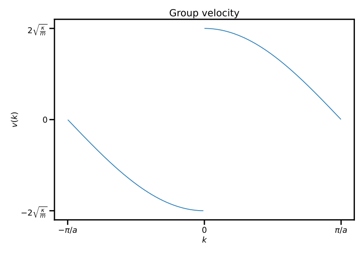
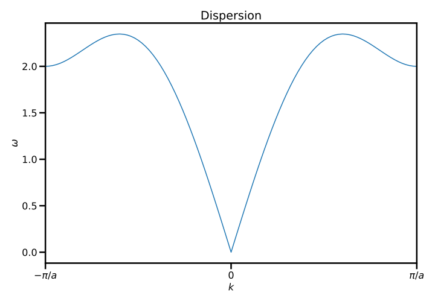
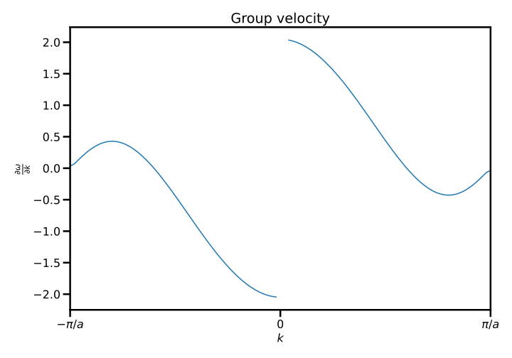
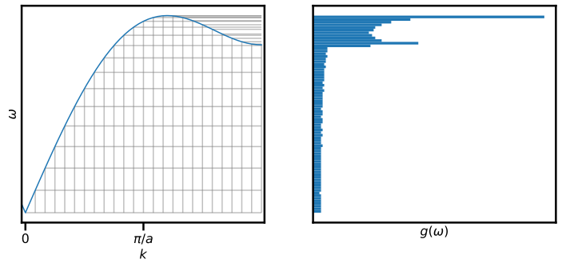
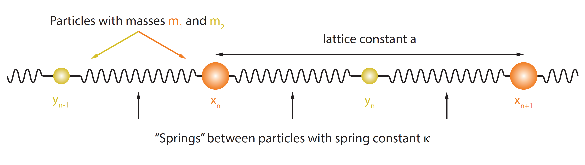
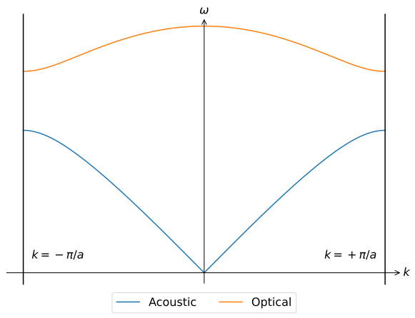
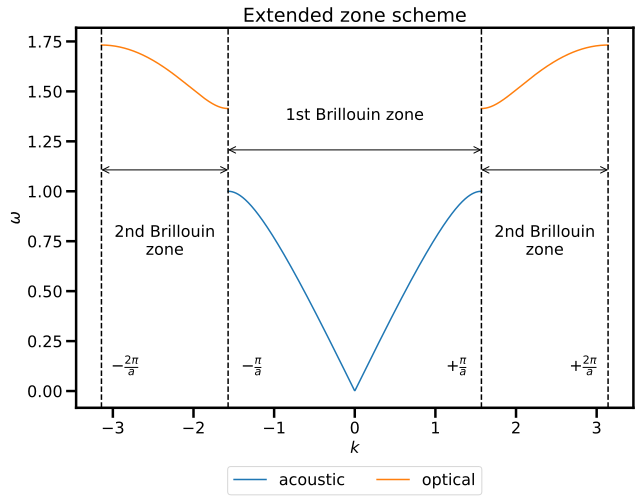
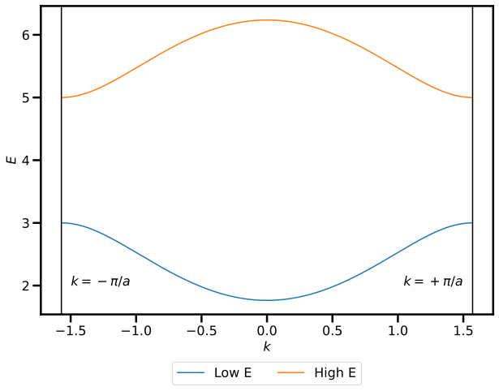
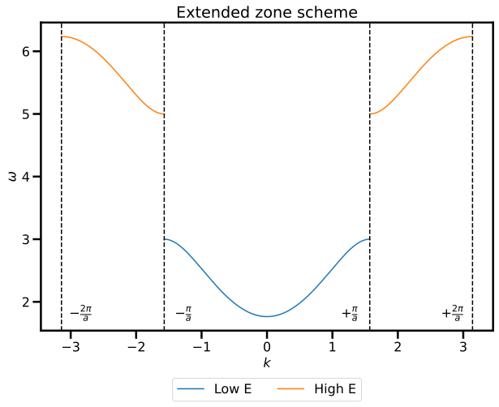

Assignment 3: One-dimensional solids (welcome to the diatomic party)¶
The third assignment can be found here
Exercise 1 - Dispersion¶
-
Use the dispersion relation to compute the group velocity \(v_g\)
The group velocity is given by
\[\begin{align} v_g(k) & =\frac{\partial \omega(k)}{\partial k}\\ & = a \sqrt{\frac{\kappa}{m}}\cos\left(\frac{ka}{2}\right) \frac{\sin(ka/2)}{|\sin(ka/2)|} \end{align}\] -
What is the relationship between the group velocity \(v_g\) and the density of states \(g(\omega)\)? Use this to calculate \(g(\omega)\)
The relationship is
\[ g(\omega) = \frac{L}{\pi} \left|\frac{1}{v_g}\right| \]into which the equation from part (i) can be inserted:
\[\begin{align} g(\omega) & = \frac{L}{a \pi} \sqrt{\frac{m}{\kappa}}\frac{1}{\cos(ka/2)}\\ & = \frac{L}{a \pi} \sqrt{\frac{m}{\kappa}}\frac{1}{\sqrt{1-\sin^2(ka/2)}}\\ & = \frac{2L}{a \pi} \frac{1}{\sqrt{4\kappa / m - \omega^2}} \end{align}\] -
Sketch or plot both \(v_g\) and \(g(\omega)\)
The group velocity is shown below

and was produced using the following code:
fig, ax = plt.subplots() k = np.linspace(-np.pi+0.01, np.pi-0.01, 300) ax.plot(k[0:149], np.sin(k[0:149])/(np.sqrt(1-np.cos(k[0:149]))), color = 'C0'); ax.plot(k[150:300], np.sin(k[150:300])/(np.sqrt(1-np.cos(k[150:300]))), color = 'C0'); ax.set_title('Group velocity') ax.set_xlabel(r'$k$'); ax.set_ylabel('$v(k)$'); plt.xticks([-np.pi, 0, np.pi], [r'$-\pi/a$', 0, r'$\pi/a$']); plt.yticks([-np.sqrt(2), 0, np.sqrt(2)], [r'$-2\sqrt{\frac{\kappa}{m}}$', 0, r'$2\sqrt{\frac{\kappa}{m}}$']); plt.tight_layout(); plt.savefig('A3-1-v.pdf', facecolor='white', transparent=False) plt.show()The density of states is shown below

and was produced using the (near identical) code:
fig, ax = plt.subplots() w = np.linspace(0, 0.95, 300); g = 1/np.sqrt(1-w**2); ax.plot(w, g, 'C0'); ax.set_xlabel(r'$\omega$'); ax.set_ylabel('$g(\omega)$'); ax.set_title('Density of states') plt.xticks([0, 1], [0, r'$2\sqrt{\frac{k}{m}}$']); plt.yticks([0.5, 1], [0, r'$\frac{L}{2\pi a}\sqrt{\frac{\kappa}{m}}$']); plt.tight_layout(); plt.savefig('A3-1-dos.pdf', facecolor='white', transparent=False) plt.show() -
Consider the dispersion curve below:

-
Sketch the group velocity \(v_g(k)\)
One needs to sketch the derivative, which could be done by hand or computationally

with the code to compute and plot the derivative shown below:
k = k_vals[1] - k_vals[0] y = nn(k_vals) gradient = np.gradient(y, dk) fig, ax = plt.subplots() ax.plot(k_vals[k_vals<0], gradient[k_vals<0], 'C0'); ax.plot(k_vals[k_vals>.1], gradient[k_vals>.1], 'C0'); ax.set_xlabel(r'$k$'); ax.set_ylabel(r'$\frac{\partial\omega}{\partial k}$'); ax.set_xlim(-2,2) ax.set_title('Group velocity') plt.xticks([-np.pi/a, 0, np.pi/a], [r'$-\pi/a$', 0, r'$\pi/a$']); plt.tight_layout(); plt.savefig('A3-1-gv.pdf', facecolor='white', transparent=False) plt.show() -
Produce a visualisation (e.g. a plot or histogram) of the density of states \(g(\omega)\)
A histogram well displays the density of states

which can be compute using the following code:
k_dos = np.linspace(0, np.pi/a, 25) # dk value (2\pi/L) # Make the band plot fig, (ax, ax2) = plt.subplots(ncols=2, sharey=True, figsize=(12, 5)) ax.plot(k_vals, nn(k_vals)); ax.vlines(k_dos, 0, nn(k_dos), colors=(0.5, 0.5, 0.5, 0.5)) ax.hlines( np.hstack(nn(k_dos)), np.hstack(k_dos), np.pi/a, colors=(0.5, 0.5, 0.5, 0.5) ) ax.set_xlabel('$k$') ax.set_ylabel(r'$ω$') ax.set_xticks([0, np.pi/2]) ax.set_xticklabels(['$0$', r'$\pi/a$']) ax.set_yticks([]) ax.set_yticklabels([]) ax.set_xlim(-0.05, max(k) + .05) k = np.linspace(0, np.pi, 1000) omegas = nn(k) ax2.hist(omegas, orientation='horizontal', bins=75) ax2.set_xlabel(r'$g(ω)$') ax2.set_xticks([]) plt.savefig('A3-1-4-dos.pdf', facecolor='white', transparent=False, bbox_inches='tight') plt.show()
-
Exercise 2 - Normal modes of a one-dimensional diatomic chain¶
-
What is the difference between an acoustic mode and optical mode? Describe the motion of atoms in the unit cell for long wavelength oscillations.
In acoustic waves, the dispersion goes to zero and \(k\) and \(\omega \sim k\) for small \(k\), whereas optical modes have an intercept with \(\omega = c k\) where \(c\) is the speed of light.
In the acoustic case, all atoms in a unit cell move in-phase with a slow spatial modulation, whereas in the optical case, adjacent atoms move out of phase with one another.
-
Derive the dispersion relation for the longitudinal oscillations of a one-dimensional diatomic mass-and-spring crystal with unit cell length \(a\) and where each unit cell contains one atom of mass \(m_1\) and one atom of mass \(m_2\) connected by a spring with spring constant \(\kappa\).

From the image, we write the position of the \(n^{\textrm{th}}\) particle with mass \(m_1\) as \(x_n\) and the position of the \(n^{\textrm{th}}\) particle with mass \(m_2\) as \(y_n\). We assume that the equilibrium position of \(x_n\) is \(n a\) and the equilibrium position is \(n a + d\).
We then write the equations of motion for the deviations from the equilibrium positions as \(\delta x_n\) and \(\delta y_n\)
\[ \begin{aligned} &m_{1} \ddot{\delta x}_{n} \quad=-\kappa\left(\delta x_{n}-\delta y_{n-1}\right)-\kappa\left(\delta x_{n}-\delta y_{n}\right) \\ &m_{2} \dot{\delta} y_{n}=-\kappa\left(\delta y_{n}-\delta x_{n}\right)-\kappa\left(\delta y_{n}-\delta x_{n+1}\right) \end{aligned} \]We then assume solutions of the form
\[ \begin{aligned} \delta x_{n} &=A_{x} e^{i k a n-i \omega t} \\ \delta y_{n} &=A_{y} e^{i k a n-i \omega t} \end{aligned} \]from which we obtain the equations
\[ \begin{aligned} -m_{1} \omega^{2} A_{x} e^{i k n a} &=-2 \kappa A_{x} e^{i k n a}+\kappa A_{y}\left(e^{i k n a}+e^{i k(n-1) a}\right) \\ -m_{2} \omega^{2} A_{y} e^{i k n a} &=-2 \kappa A_{y} e^{i k n a}+\kappa A_{x}\left(e^{i k n a}+e^{i k(n+1) a}\right) \end{aligned} \]which simplify to
\[ \begin{aligned} \omega^{2} A_{x} &=2\left(\kappa / m_{1}\right) A_{x}-\left(\kappa / m_{1}\right)\left(1+e^{-i k a}\right) A_{y} \\ \omega^{2} A_{y} &=2\left(\kappa / m_{2}\right) A_{y}-\left(\kappa / m_{2}\right)\left(1+e^{i k a}\right) A_{x} \end{aligned} \]which defines an eigenvalue problem for \(\omega^2\). Therefore we must find the roots of the determinant
\[ \left|\begin{array}{cc} 2\left(\kappa / m_{1}\right)-\omega^{2} & -\left(\kappa / m_{1}\right)\left(1+e^{-i k a}\right) \\ -\left(\kappa / m_{2}\right)\left(1+e^{i k a}\right) & 2\left(\kappa / m_{2}\right)-\omega^{2} \end{array}\right| \]which yields the equation
\[ \begin{aligned} &0=\omega^{4}-\omega^{2}\left(2 \kappa\left(1 / m_{1}+1 / m_{2}\right)\right)+\frac{\kappa^{2}}{m_{1} m_{2}}\left(4-\left(1+e^{i k a}\right)\left(1+e^{-i k a}\right)\right) \\ &\left.0=\omega^{4}-\omega^{2}\left(\frac{2\left(m_{1}+m_{2}\right) \kappa}{m_{1} m_{2}}\right)+\frac{\kappa^{2}}{m_{1} m_{2}}(2-2 \cos (k a))\right) \end{aligned} \]and ultimately
\[ \begin{aligned} \omega^{2} &=\frac{\kappa}{m_{1} m_{2}}\left(m_{1}+m_{2} \pm \sqrt{m_{1}^{2}+m_{2}^{2}+2 m_{1} m_{2} \cos (k a)}\right) \\ &=\frac{\kappa}{m_{1} m_{2}}\left(m_{1}+m_{2} \pm \sqrt{\left(m_{1}+m_{2}\right)^{2}-4 m_{1} m_{2} \sin ^{2}(k a / 2)}\right) \end{aligned} \] -
Determine the frequencies of the acoustic and optical modes at \(k=0\) and at the Brillouin zone boundary
At \(k=0\), \(\cos(ka)=1\) and therefore the acoustic mode has zero energy whereas the optical mode has energy
\[ \omega = \sqrt{\frac{2\kappa(m_1+m_2)}{m_1 m_2}} \]At the Brilllouin zone boundary, \(\cos(ka)=-1\) and so the energies of the two modes are
\[ \omega = \sqrt{\frac{2\kappa(m_1)}{m_1 m_2}} \quad \sqrt{\frac{2\kappa(m_2)}{m_1 m_2}} \] -
Determine the sound velocity, and show that the group velocity is zero at the zone boundary ()
To find the sound velocity, one must expand around \(k=0\) for the acoustic mode and then one end with an equation of the from \(\omega = v k\) with
\[ v = a \sqrt{\frac{\kappa}{2(m_1 + m_2)}} \]The group velocity \(v_g\) is given by \(\mathrm{d}\omega/\mathrm{k}\) and whilst the form of \(\omega\) is a bit ugly, if we write \(f = \omega^2\), we are interested in the derivative of the function \(g = f^{1/2}\). So by the chain rule,
\[ \frac{\mathrm{d}g}{\mathrm{k}} = \frac{\mathrm{d}g}{\mathrm{d}f} \frac{\mathrm{d}f}{\mathrm{d}k} \]which means
\[ v_g = \frac{1}{2}\frac{1}{f^{1/2}} \frac{\mathrm{d}f}{\mathrm{d}k}. \]Now \(f\) is well behaved around \(k = \pm\pi/a\), so we only need look at \(\frac{\mathrm{d}f}{\mathrm{d}k}\). Again, \(f\) is a bit ugly, but is essentially
\[ f = c_1 \pm \sqrt{c_2 + c_3 \cos(k a)} \]with constants \(c_i\), and therefore, once again using the chain rule
\[ \mathrm{d}f/\mathrm{d}k \sim \pm \frac{c_4 \sin(k a)}{\sqrt{c_2 + c_3 \cos(k a)}} \]which goes to zero for \(k = \pi/a\) and therefore \(v_g \rightarrow 0\)
-
Sketch or plot the dispersion in both the reduced and extended zone scheme
The dispersion in the reduced zone scheme:

The dispersion in the extended zone scheme:

The above plots were computed using the code below:
Much code
# Define a function to return the dispersion def dispersion_diatomic(k, kappa = 1, m1 = 2, m2 = 1, acoustic=True): cons = m1 + m2 sq = np.sqrt((cons ** 2) - (4 * m1 * m2 * np.sin(k * a/2) ** 2)) if acoustic: sq *= -1 return np.sqrt(kappa/(m1*m2) * (cons + sq)/m) scale = 3 # Set the sclae for plotting past the Brillouin zone a = 2 # Set the lattice constant brillouin = np.linspace(-np.pi/a, np.pi/a, 500) # k values in the Brillouin zone ks = brillouin * scale # k values further afield - obviously less well sampled kappa = 1 # Plot the dispersion fig, ax = plt.subplots() ax.plot(brillouin, dispersion_diatomic(brillouin), color = 'C0', label = 'Acoustic') ax.plot(brillouin, dispersion_diatomic(brillouin, acoustic = False), color = 'C1', label = 'Optical') ## The labelling is very tedious, there is little value to be found here # Plot and annotate the Brillouin zone boundary xvals = [-np.pi/a, np.pi/a] for v in xvals: ax.axvline(x=v, color = 'black') offset = 0.3 if v < 0: sign = '-' elif v > 0: sign = '+' offset = -offset # Label the Brillouin range ax.text(v + offset, .1 , f'$k ={sign}\pi/a$', horizontalalignment='center', fontsize=16) # Make the plot pretty ax.set_xlabel('$k$') ax.set_ylabel('$\omega$') ax.set_xlim(1.1*min(xvals),1.1*max(xvals)) plt.legend(bbox_to_anchor=(.5, -.125), loc='lower center', ncol=2) draw_classic_axes(ax) plt.savefig('A3-2-brillouin.svg', facecolor='white', transparent=False, bbox_inches='tight') plt.show() # Make arrays for the first and second Brillouin zones # first Bz brillouin = np.linspace(-np.pi/a, np.pi/a, 500) # second Bz # You may be tempted to have a single array here, but if you do this, your plot will be ugly! # Verify this for yourself: you will find the function "numpy.concatenate" useful. first_ex = np.linspace(-2*np.pi/a, -np.pi/a,250) second_ex = np.flip(first_ex * -1) # Plot the Brillouin zones fig, ax = plt.subplots() ax.plot(brillouin, dispersion_diatomic(brillouin), color = 'C0', label = 'acoustic') ax.plot(first_ex, dispersion_diatomic(first_ex, acoustic = False), color = 'C1', label = 'optical') ax.plot(second_ex, dispersion_diatomic(second_ex, acoustic = False), color = 'C1') # Only use one label to avoid double-tagging ## The labelling is very tedious, there is little value to be found here # Plot and annotate the Brillouin zone boundaries - this is painfully manual xvals = [-2*np.pi/a, -np.pi/a, np.pi/a, 2*np.pi/a] for n, v in enumerate(xvals): ax.axvline(x=v, color = 'black', linestyle = '--') offset = 0.3 if v < 0: sign = '-' if n == 0: text = f'${sign}$'+r'$\frac{2\pi}{a}$' else: n = text = f'${sign}$'+r'$\frac{\pi}{a}$' elif v > 0: sign = '+' offset = -offset if n == 3: text = f'${sign}$'+r'$\frac{2\pi}{a}$' else: n = text = f'${sign}$'+r'$\frac{\pi}{a}$' # Label the Brillouin range text ax.text(v + offset, .1 , text, horizontalalignment='center', fontsize=16) omega_plus = np.sqrt(2*kappa/m) omega_minus = np.sqrt(2*kappa/2*m) gap = (omega_plus + omega_minus) / 2 # Band gap for arrows # Label the 1st Bz ax.text(0, gap - offset/2 , '1st Brillouin zone', horizontalalignment='center', fontsize=16) ax.annotate(text='', xy=(-np.pi/a, gap), xytext=(np.pi/a, gap), arrowprops=dict(arrowstyle='<->', shrinkA=0, shrinkB=0)) # Label the 2nd Bz (<0) ax.text(-3*np.pi/(2*a), gap + 1.75 * offset , '2nd Brillouin\nzone', horizontalalignment='center', fontsize=16) ax.annotate(text='', xy=(-2*np.pi/a, gap-.1), xytext=(-np.pi/a, gap-.1), arrowprops=dict(arrowstyle='<->', shrinkA=0, shrinkB=0)) # Label the 2nd Bz(>0) ax.text(3*np.pi/(2*a), gap + 1.75 * offset , '2nd Brillouin\nzone', horizontalalignment='center', fontsize=16) ax.annotate(text='', xy=(np.pi/a, gap-.1), xytext=(2*np.pi/a, gap-.1), arrowprops=dict(arrowstyle='<->', shrinkA=0, shrinkB=0)) # Make the plot pretty ax.set_xlabel('$k$') ax.set_ylabel('$\omega$') ax.set_title('Extended zone scheme'); plt.legend(bbox_to_anchor=(.5, -.25), loc='lower center', ncol=2) plt.savefig('A3-2-extended.svg', facecolor='white', transparent=False, bbox_inches='tight') plt.show() -
Assuming that there are \(N\) unit cells, how many different normal modes are there? And how many branches of excitation are there?
If there are \(N\) unit cells, therefore \(2N\) atoms, there are \(2N\) modes. As there are 2 modes for \(k\) in the reduced zone scheme, there are two branches
-
What happens when
When the masses as equal, the unit cell is now of size \(a/2\) to the Brillouin zone is double in size, and the gap between the branches vanishes, and the system looks identical to the monatomic chain (the image from the extended zone scheme works well here)
Exercise 3 - Diatomic tight binding chain¶
We have seen the both the diatomic chain and the tight-binding chain, so we are going to combine the two. Consider the system shown below

Suppose that the onsite energy of atom \(A\) is different for atom \(B\), that is \(\langle n | H | n \rangle = \epsilon_A\) for being on site \(A\) and \(\langle n | H | n \rangle = \epsilon_B\) for \(| n \rangle\) being on site \(B\). We assume that the hopping \(-t\) is unchanged from the monatomic case.
-
Derive the dispersion curve for electrons
The unit cell \(a\) is the distance from an \(A\) atom to another \(A\) atom. Let \(\phi_n^A\) be the amplitude of the wavefunction on the \(n^{\mathrm{th}}\) site of type \(A\) and \(\phi_n^B\) be the amplitude of the wavefunction on the \(n^{\mathrm{th}}\) site of type \(B\). We assume a trial wavefunction of the form
\[ | \psi \rangle = \sum_n (\phi_n^A + \phi_n^B) | \psi \rangle \]and put this into the Schrödinger equation and find an effective Schrödinger equation of the form
\[ \begin{aligned} E \phi_{n}^{A} &=\epsilon_{A} \phi_{n}^{A}-t\left(\phi_{n}^{B}+\phi_{n-1}^{B}\right) \\ E \phi_{n}^{B} &=\epsilon_{B} \phi_{n}^{B}-t\left(\phi_{n}^{A}+\phi_{n+1}^{A}\right) \end{aligned} \]Assuming solutions of the form
\[ \begin{aligned} \phi_{n}^{A} &=A e^{i k n a} \\ \phi_{n}^{B} &=B e^{i k n a} \end{aligned} \]gives
\[ \begin{aligned} E A &=\epsilon_{A} A-t\left(1+e^{-i k a}\right) B \\ E B &=\epsilon_{B} B-t\left(1+e^{i k a}\right) A \end{aligned} \]again giving a \(2 \times 2\) eigenvalue problem. We solve for the roots of the determinant
\[ \left|\begin{array}{cc} \epsilon_{A}-E & -t\left(1+e^{-i k a}\right) \\ -t\left(1+e^{i k a}\right) & \epsilon_{B}-E \end{array}\right| \]which givens the equation
\[ 0=E^{2}-E\left(\epsilon_{A}+\epsilon_{B}\right)+\left(\epsilon_{A} \epsilon_{B}-t^{2}(2+2 \cos (k a))\right) \]\[ E_{\pm}(k)=\frac{1}{2}\left(\epsilon_{A}+\epsilon_{B} \pm \sqrt{\left(\epsilon_{A}-\epsilon_{B}\right)^{2}+4 t^{2}(2+2 \cos (k a))}\right) \] -
Sketch or plot the above dispersion relation in both the reduced and extended zone schemes
The dispersion in the reduced zone scheme:

The dispersion in the extended zone scheme:

The above plots were computed using the code below:
Very code
def energy(k, ea = 5, eb = 3, t = 1, low = True): const = ea - eb sqrt = np.sqrt(const ** 2 + 4 * t ** 2 * (2+2*np.cos(k*a))) if low: sqrt *= -1 return 1/2 * (ea + eb + sqrt) scale = 3 # Set the sclae for plotting past the Brillouin zone a = 2 # Set the lattice constant brillouin = np.linspace(-np.pi/a, np.pi/a, 500) # k values in the Brillouin zone ks = brillouin * scale # k values further afield - obviously less well sampled # Plot the dispersion fig, ax = plt.subplots() ax.plot(brillouin, energy(brillouin), color = 'C0', label = 'Low E') ax.plot(brillouin, energy(brillouin, low = False), color = 'C1', label = 'High E') ## The labelling is very tedious, there is little value to be found here # Plot and annotate the Brillouin zone boundary xvals = [-np.pi/a, np.pi/a] for v in xvals: ax.axvline(x=v, color = 'black') offset = 0.3 if v < 0: sign = '-' elif v > 0: sign = '+' offset = -offset # Label the Brillouin range ax.text(v + offset, 2 , f'$k ={sign}\pi/a$', horizontalalignment='center', fontsize=16) # Make the plot pretty ax.set_xlabel('$k$') ax.set_ylabel('$E$') ax.set_xlim(1.1*min(xvals),1.1*max(xvals)) plt.legend(bbox_to_anchor=(.5, -.25), loc='lower center', ncol=2) plt.savefig('A3-3-brillouin.svg', facecolor='white', transparent=False, bbox_inches='tight') plt.show() # Make arrays for the first and second Brillouin zones # first Bz brillouin = np.linspace(-np.pi/a, np.pi/a, 500) # second Bz # You may be tempted to have a single array here, but if you do this, your plot will be ugly! # Verify this for yourself: you will find the function "numpy.concatenate" useful. first_ex = np.linspace(-2*np.pi/a, -np.pi/a,250) second_ex = np.flip(first_ex * -1) # Plot the Brillouin zones fig, ax = plt.subplots() ax.plot(brillouin, energy(brillouin), color = 'C0', label = 'Low E') ax.plot(first_ex, energy(first_ex, low = False), color = 'C1', label = 'High E') ax.plot(second_ex, energy(second_ex, low = False), color = 'C1') # Only use one label to avoid double-tagging ## The labelling is very tedious, there is little value to be found here # Plot and annotate the Brillouin zone boundaries - this is painfully manual xvals = [-2*np.pi/a, -np.pi/a, np.pi/a, 2*np.pi/a] for n, v in enumerate(xvals): ax.axvline(x=v, color = 'black', linestyle = '--') offset = 0.3 if v < 0: sign = '-' if n == 0: text = f'${sign}$'+r'$\frac{2\pi}{a}$' else: n = text = f'${sign}$'+r'$\frac{\pi}{a}$' elif v > 0: sign = '+' offset = -offset if n == 3: text = f'${sign}$'+r'$\frac{2\pi}{a}$' else: n = text = f'${sign}$'+r'$\frac{\pi}{a}$' # Label the Brillouin range text ax.text(v + offset, 1.75 , text, horizontalalignment='center', fontsize=16) # Make the plot pretty ax.set_xlabel('$k$') ax.set_ylabel('$\omega$') ax.set_title('Extended zone scheme'); plt.legend(bbox_to_anchor=(.5, -.25), loc='lower center', ncol=2) plt.savefig('A3-3-extended.svg', facecolor='white', transparent=False, bbox_inches='tight') plt.show() -
What is the effective mass of an electron near the bottom of the lower band?
To find the effective mass, we expand the energy around the minimum which gives
\[ E= \mathrm{ constant }+\frac{2 t^{2}(k a)^{2}}{\sqrt{\left(\epsilon_{A}-\epsilon_{B}\right)^{2}+16 t^{2}}} \]which set equal to \(\hbar^2 k^2 / (2m^*)\) and find
\[ m^{*}=\frac{\hbar^{2} \sqrt{\left(\epsilon_{A}-\epsilon_{B}\right)^{2}+16 t^{2}}}{4 t^{2} a^{2}} \] -
If each atom (\(A\) and \(B\)) are monovalent, is the system a conductor or insulator? Justify your response
If each atom is monovalent, there are now two electrons per unit cell, and this fills exactly the lower band and therefore the system is insulating.
-
Consider the material LiF, and use the above results to justify why it is observed to be an excellent insulator.
For LiF we can expect a much lower energy for electrons on F than on Li (F has a large electron affinity, Li has a low ionization energy). So we can set \(\epsilon_A \ll \epsilon_B\). What happens in this limit is that the bands are extremely far apart – thus a very good insulator.
If you are really keen, one can look at the eigenvectors in the lower band, and one will find that they are almost completely on the lower energy atoms. Thus the free electron is transferred almost completely from the higher to the lower energy atom.